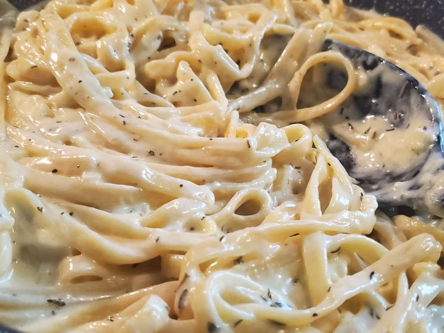

American Alfredo (Joshua Weissman)

Ingredients
- 14 oz (400g) Fettuccine
- 1/2 cup unsalted butter (could use MSG butter)
- 1 1/4 cup heavy whipping cream
- 5 cloves garlic, finely minced
- 2 tsp finely chopped thyme
- Salt and pepper to taste
- 2 cups parmigiano reggiano
- Black peppercorn
Instructions
- Place fettuccine in a pot of boiling water that’s been seasoned generously with salt. Cook according to package instructions or until done.
- In a large pan, add heavy whipping cream and unsalted butter set to medium heat. Constantly stir the pan until all the butter has melted.
- Increase the heat slightly and bring to a gentle simmer. Simmer, stirring occasionally, for 3-4 minutes or until lightly thickened.
- Cut off the heat and add in parmigiano reggiano, chopped thyme, and finely chopped garlic. Vigorously stir together until thoroughly combined. Season to taste with salt and pepper.
- Reserve ¾ cup of pasta water. Drain the pasta.
- Add pasta to the alfredo sauce. Toss and using pasta water as needed to fully emulsify.
- Place in a bowl. Top with grated parmigiano reggiano and a crack of black peppercorn before serving.